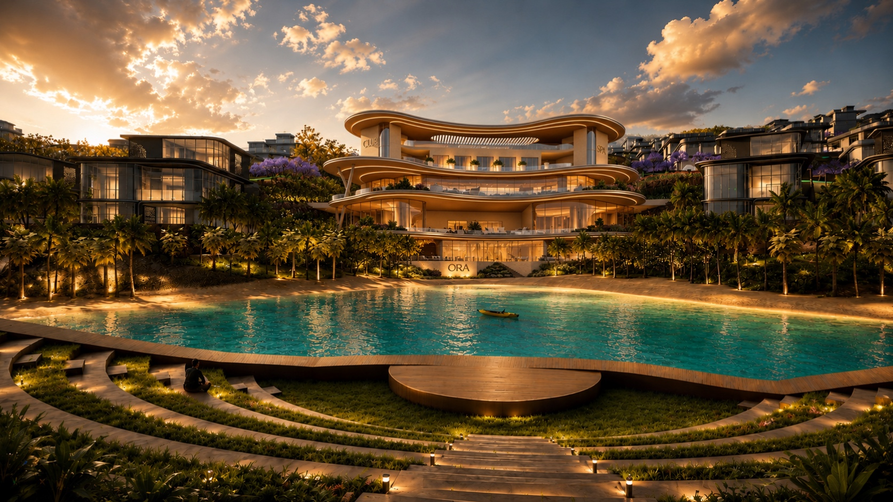
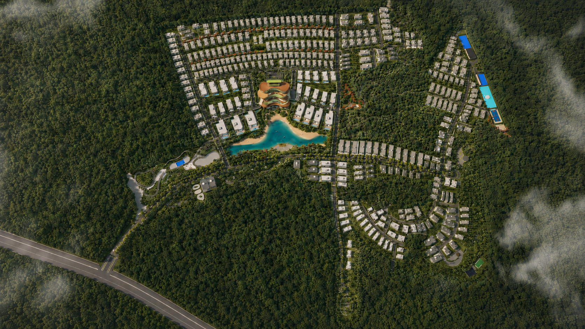

Forest by the Hills, near Tata Power House Road, has put Karjat on the map for second-home buyers. It's a fair reason to look at the area. But once you start comparing what's actually on offer, BluBay by ORA Land makes a strong case for itself, and not just on price. Clear title, ready-to-build plots, and a lagoon-and-clubhouse lifestyle you don't have to wait years for.

What Makes BluBay Stand Out in This Belt
BluBay sits on 60 acres of gated, NA plotted land, with 325 plots ranging from 1,900 to 4,500 sq. ft. Eighty-five percent of the plots face the valley, so the view isn't an afterthought, it's built into the layout. Buyers get a plot with clear title and MahaRERA registration under PP1271012600752, which means the paperwork is done before you even start looking.
Ready to Build, Not Ready to Wait
One thing buyers notice fast: BluBay plots are NA, cleared for construction. No waiting on land conversion, no uncertainty about what you can legally build. You buy the plot, you design your home, you start.
A Lifestyle That's Already There
The 60,000 sq. ft. lagoon and 35,000 sq. ft. clubhouse aren't renderings on a brochure, they're part of what makes BluBay feel like a finished community rather than a work in progress. Add in 60-plus lifestyle facilities, and it's a different experience from buying raw land and building everything around you from scratch.

Real Numbers: Plot Size, Price, and Legal Clarity
| What Matters | BluBay by ORA Land |
|---|---|
| Total scale | 60 acres, gated |
| Plot sizes | 1,900 – 4,500 sq. ft. |
| Total plots | 325 |
| Starting price | ₹99.75 lakh |
| MahaRERA | PP1271012600752 |
| Valley-facing plots | 85% |
| On-site amenities | 60,000 sq. ft. lagoon, 35,000 sq. ft. clubhouse, 60+ facilities |
Why Karjat's Growth Corridor Favors BluBay
Karjat isn't just a weekend-home town anymore. It's being positioned as part of Mumbai's next growth ring, and BluBay sits right inside that story. For buyers thinking beyond the next five years, that corridor positioning matters as much as the plot itself.
See What's Available Right Now
Live plot inventory for BluBay updates as plots are booked. Check what's open today.
View BluBay Plots on oraland.inOr reach ORA Land directly: +91 74208 93829
Explore More of ORA Land's Karjat Network
This page is one part of a wider set of Karjat resources built to help buyers compare their options properly before deciding.
More From the ORA Land Blog
Frequently Asked Questions
What makes BluBay different from other Karjat land options?
A 60-acre gated NA plotted development with clear title and MahaRERA registration. Plots run 1,900 to 4,500 sq. ft. across 325 total, 85% valley-facing, with a 60,000 sq. ft. lagoon and 35,000 sq. ft. clubhouse on site.
Is BluBay ready to build on immediately?
Yes. The plots are NA with clear title, so there's no wait on land conversion before you can start building.
Where can I see live plot availability?
Current inventory is listed on oraland.in and updates as plots are booked.
- Hero: aerial or wide shot of the lagoon with valley backdrop, shot at golden hour
- A cleared, valley-facing plot with boundary markers visible, to show "ready to build"
- Clubhouse exterior, ideally with a few people using it, for lived-in feel
- Close-up of the RERA signage or approval document, for the legal-clarity section
- Wide shot of the access road into BluBay, showing connectivity
- Optional: drone shot showing plot layout and 85% valley orientation